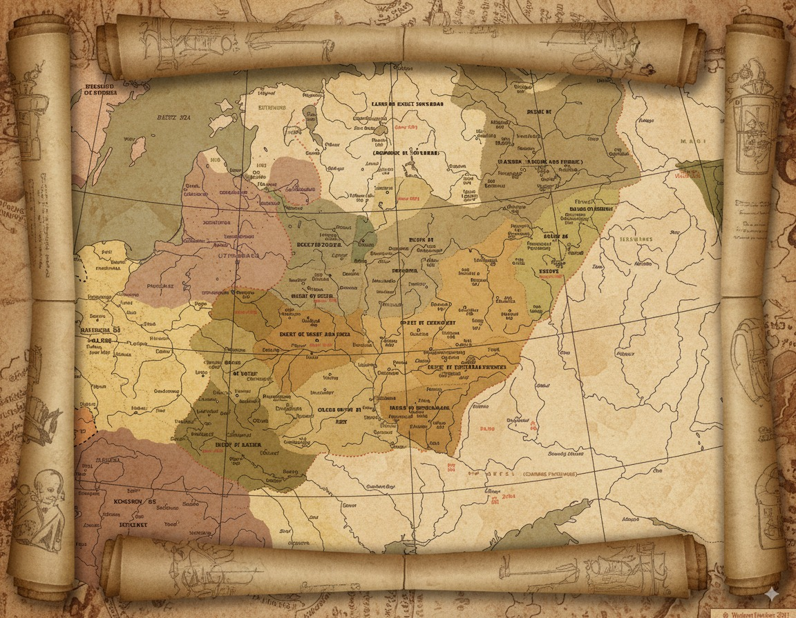

Александр Невский: Ключевые события
(Цитата из к/ф "Александр Невский")
Исторический контекст: Русь XIII века
XIII век был для Руси временем тяжелых испытаний. Княжеские междоусобицы ослабили государство, сделав его уязвимым для внешних врагов. В этот период Русь столкнулась с двумя основными угрозами: нашествием монголов с Востока и агрессией со стороны шведских и немецких рыцарских орденов с Запада.
ЗАПАД (Шведы, Ливонский орден)
- Цель: Захват земель, насаждение католичества.
- Метод: Военная агрессия.
- Сила: Тяжеловооруженные рыцари, хорошая организация.
ВОСТОК (Золотая Орда)
- Цель: Сбор дани, контроль над князьями.
- Метод: Разорительные набеги, террор.
- Сила: Огромная армия, мобильность.
Ранние годы и начало княжения
Александр, сын князя Ярослава Всеволодовича, родился в Переяславле-Залесском. С ранних лет он был вовлечен в государственные дела. Еще будучи ребенком, он был оставлен отцом в качестве наместника в Новгороде, где получил первый опыт управления в сложных условиях.
- Рождение: ~1221 г., Переяславль-Залесский.
- Отец: Ярослав Всеволодович, князь Переяславский и Киевский, Великий князь Владимирский.
- Имя "Александр": В переводе с греческого — "защитник людей".
- Княжеский постриг: Обряд посвящения в воины, прошел в раннем детстве.
- Первый опыт: В 1228 г. (в 7 лет) оставлен наместником в Новгороде.
В возрасте 15 лет Александр был избран на самостоятельное княжение в Новгороде. Это был крупный торговый город с республиканской формой правления (вече). Князь в Новгороде выполнял в первую очередь функции военачальника. Александр сразу занялся укреплением западных границ новгородских земель.
Невская битва
Воспользовавшись ослаблением Руси после монгольского нашествия, шведский отряд высадился в устье реки Невы. Александр с небольшой дружиной, не дожидаясь сбора основного войска, совершил быстрый переход и внезапно атаковал шведский лагерь. Шведы были разбиты. За эту победу князь Александр получил почетное прозвище "Невский".
Конфликт с Новгородом и немецкое вторжение
После Невской битвы у Александра произошел конфликт с новгородскими боярами, и он был вынужден покинуть город. Этим воспользовался Ливонский орден: рыцари захватили крепость Изборск, а затем и Псков. Создалась прямая угроза Новгороду. Новгородцы были вынуждены вновь просить Александра вернуться и возглавить войско.
Ледовое побоище
Александр вернулся, освободил Псков и вывел войско на лёд Чудского озера для решающего сражения. Его тактический план заключался в том, чтобы заманить главный удар рыцарей в центр и затем разгромить их ударами с флангов.
План сработал идеально. Тяжеловооруженные рыцари увязли в бою с пехотой, после чего русская конница ударила с флангов и окружила противника. Враг был полностью разгромлен, что надолго остановило продвижение Ордена на восток.
Отношения с Ордой и конец жизни

После побед на Западе основной задачей Александра стало выстраивание отношений с Золотой Ордой, так как открытое военное сопротивление было невозможно. Он выбрал путь дипломатии. Несколько раз он ездил в столицу Орды, где добивался ярлыков на княжение, предотвращал карательные походы и выкупал пленных. Его политика позволила сохранить Русь от полного разорения.
Возвращаясь из своей последней поездки в Орду, где он отвёл угрозу нового нашествия, Александр Невский заболел и скончался в Городце на Волге. Он умер в возрасте 42 лет.
Духовное наследие
- Канонизирован как святой благоверный князь.
- Считается небесным покровителем Санкт-Петербурга и воинов.
- Символ защиты православной веры.
Государственное наследие
- Учрежден орден Александра Невского (1725 г.) — одна из высших наград.
- Национальный герой, символ воинской доблести.
- Пример мудрого правителя, сочетавшего силу и дипломатию.